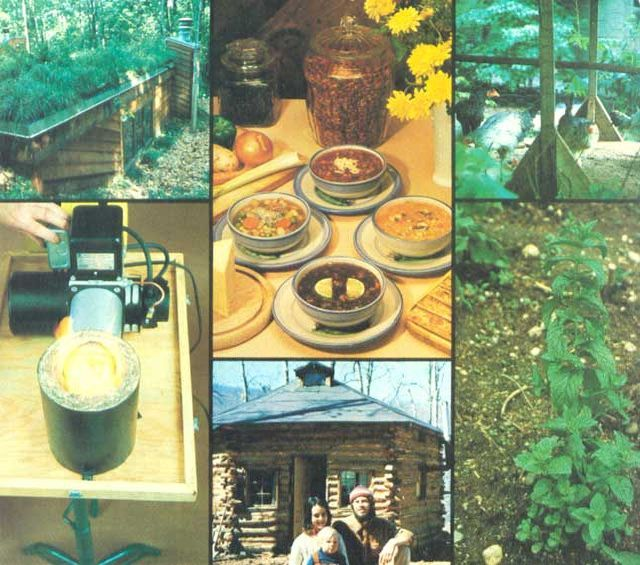

In MOTHER NO. 55 we promised to give you some information on our Seminar Advisory Board "brain trust" in the near future. And, as you know, when MOTHER says she'll do something, she does it! So, since the Earth-Sheltered Homes (ESH) seminar seems to be one of our most popular offerings, we'll "kick off" the catalog of talent by tellin' you about a few of the folks who're workin' with us to make the ESH seminar an absolutely definitive program on energy-saving, below-ground or earth-bermed homes.
The people up in Minnesota are mighty serious about alternative energy (as they should be ... their winters are about as cold as that season can get!), and when the Wolverine State wanted a comprehensive study of earth-sheltered housing, they asked Ray Sterling, Director of the Underground Space Center at the University of Minnesota, to handle the job. We think they made a fine choice, which is why Ray will be working on our team, too!
Sterling will be joined by Frank More-land, a Fort Worth, Texas architect who designs ESH's exclusively. Frank is also associated with the School of Architecture and Environmental Design at the University of Texas (Arlington), and directs the Clearinghouse for Earth-Covered Buildings.
Malcolm Wells (whose name has turned up in MOTHER'S pages once or twice!) will help us out, too. The Brewster, Maine solar/underground architect and writer believes that wilderness values-rather than zoning laws-should be the controlling standards for land use and architectural design.
Don Secrist and Buck Vaile from Solar Earth-Energy in Columbus, Ohio (the two gentlemen who designed and built the beautiful home featured on pages 101-103 of MOTHER NO. 51) will round out our group of design experts. One look at the photos in that back issue of this publication will be enough to convince you that Don and Buck really know their subject!
Some folks are still finding ESH mortgages a bit difficult to come by, and so-to make sure we stay on top of the "available money" question-we've gotten the assistance of Shelby Smith. Shelby really knows the ropes in this tricky field, because he happens to be Vice-President/Economist at the Federal Home Loan Bank of Little Rock, Arkansas.
Excavations can sometimes be a problem, too. That's why we've signed up Nolan Aughenbaugh, the Chairman of the Department of Mining, Petroleum, and Geological Engineering at the University of Missouri. Nolan will be giving all of our seminar materials his own invaluable attention.
In addition, Lyle Fiesel (Chairman of the Department of Electrical Engineering at the South Dakota School of Mines and Technology), William Panarese (who just happens to be the editor of Concrete Construction magazine), A. Dan Tarlock (Professor of Law at Indiana University), and Ed Kennedy (editor of Southern Building Code Congress International, Inc. magazine) will be sure that we have the best information possible in their particular areas of expertise.
So there you have it: a list of folks who'll guarantee that MOTHER'S seminar will be the most comprehensive Earth-Sheltered Home program ever attempted. And, as we'll show you in coming issues, the talent we have lined up for our many other "classes" is just as impressive!
Those folks who've already signed on for one or more seminars will soon be receiving (maybe even before they read this!) a packet of information from the Hendersonville, North Carolina Chamber of Commerce that covers such important topics as motel/hotel reservations, restaurants, and so forth.
And those of you who haven't sent in your preregistration forms yet-but who do want to join us for an educational vacation at MOTHER'S mountain home-should fill out the form that accompanies this article and get that piece of paper to us fast . . . 'cause some of our seminars are darn near "full up" already!
|
 TOP, LEFT: The three-day Earth-Sheltered Homes seminar will give you all the ?hows? and ?whys? relevant to these beautiful and practical dwellings. BOTTOM, LEFT: Does alcohol fuel burn well? Darn right it does! And our Father?s Alcohol seminar will cover the subject from harvest to heating! TOP, CENTER: The thorough background in good eating provided by our Natural Foods/Preparation seminar will help you feed your family healthful meals for below supermarket prices. BOTTOM, CENTER: If the idea of building a home by yourself?using materials found on your own land?appeals to you? the Log Cabin Construction Seminar will provide the necessary know-how. TOP, RIGHT: Critters (be they big or small) can help you put dinner on the table in good times or bad. Look into our Raising Backyard/Homestead Livestock seminar to get your flock, herd, or gaggle off on the right foot! BOTTOM, RIGHT: Herbs (this one is spearmint) can be a source of home remedies, delicious teas, fresh spices, or even the basis of a profitable bootstrap business, and our seminar on the subject will have you windowsill or garden green in no time! |
|
|